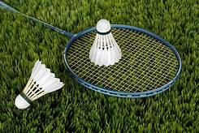

Hi! I'm Maureen.
A Gamer



My hobbies
- Playing badminton
- Playing board games
- Playing online games( Mobile Legends)
Hi! I'm Maureen Repollo. My hobbies are playing badminton, board games, and online games like mobile legeds.
I realyy love to play badminton but i never played when it comes to a contest .
I am afraid that someone will laugh at me and bully me that i am not a good player.
So eventhough i love badminton i still dont want to play with it.
Also, I love to play board games. I won some on a contest but mostly i lost.
But i did'nt stop playing and participating on a contest
because i know that someday i will master this game and won more contest.
And as i love the most.I love to play Mobile Legands. When i have free time i played mobile legends.
I love playing it because i gained so much friends with this game.
My mother always told me that playing is not that bad but being addicted with the game is a bad thing.
As a Filipino we have the saying that " Lahat ng sobra ay nakakasama" So i always control my self
when most of my time is wasted on online games i always remind my self that "Lahat ng sobra ay nakakasama"
Those are my hobbies but i'm not a pro i'm just a player. Just a reminder it's okay to play. It's okay if you want to master a game.
But don't forget that your hobbies should make you more healty and a good person. Try to observe yourself when you think
your hobbies are still making good thing to you then maintain it. But when you observe that your hobbies are making you worst
then stop it. Make yourself more better, manage your time well, and make yourself more productive not addictive.